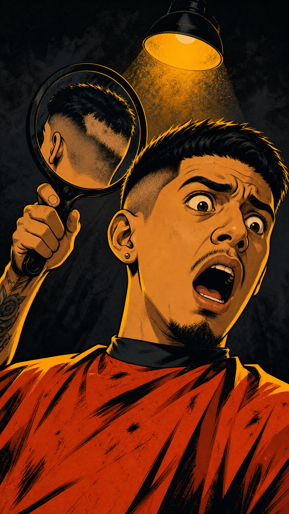
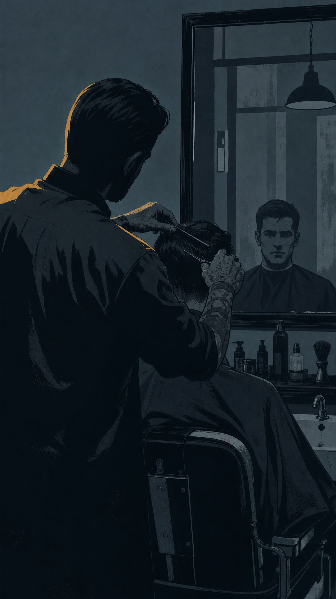
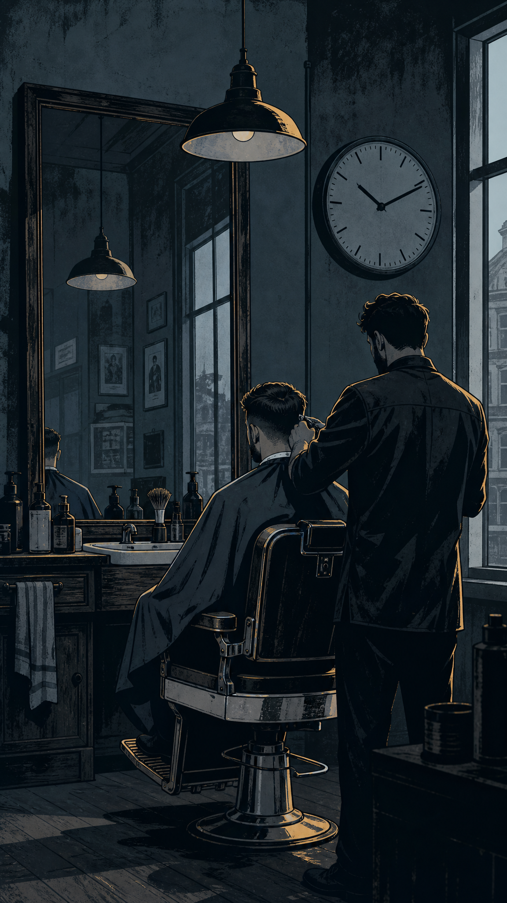
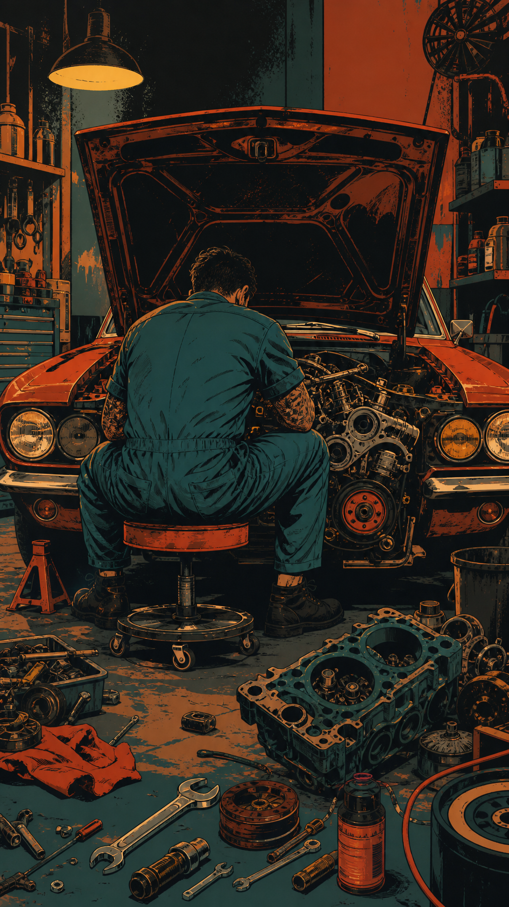
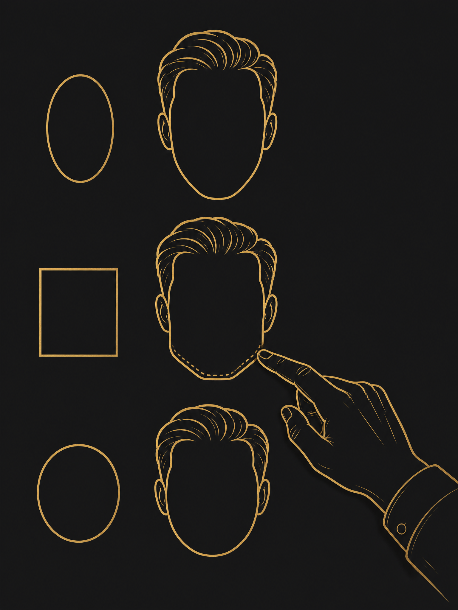

¿QUÉ ME HICISTE AQUÍ ATRÁS, VOS?!
Así te sentís cuando el barbero te corta... y no dice ni pío.
Te sentás. Decís "así nomás, parejito" — y ya, empieza a cortar.
Y en todo el corte no te dice nada.
Ni qué te está haciendo, ni por qué.
Es como llevar el carro al taller...
y que el mecánico lo desarme sin decirte qué le va a hacer.
Tu corte no es un experimento —
es tu cara, todos los días.
Por eso en Nordic lo hacemos distinto.



LA PROMESA
Te explican qué te están haciendo.
Te sugieren según la forma de tu cara.
Y te enseñan cómo replicarlo en casa.
El que sale de Nordic, sale sabiendo
por qué se ve bien — no adivinando.
Forged for the close cut.